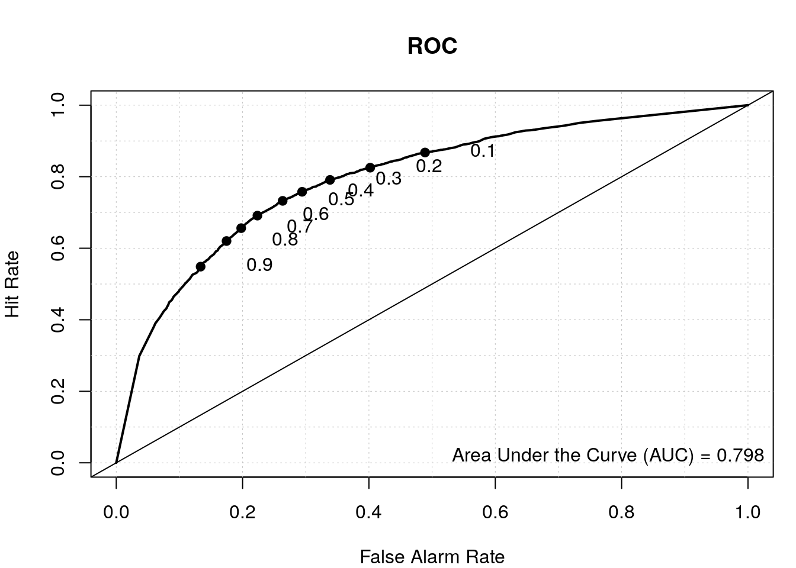
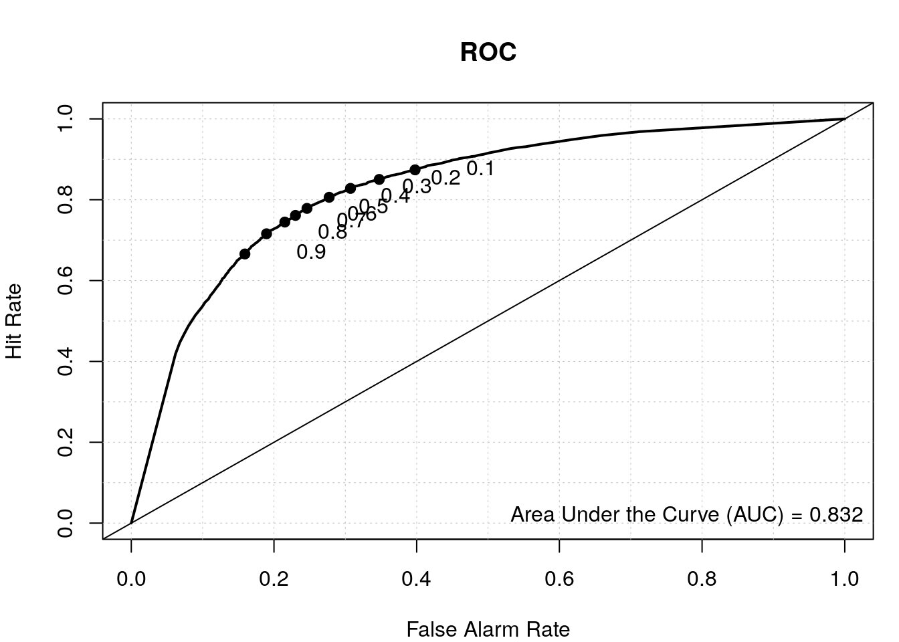

Sequence composition and Random Forests
2022-11-08
Last updated: 2022-11-08
Checks: 7 0
Knit directory: muse/
This reproducible R Markdown analysis was created with workflowr (version 1.7.0). The Checks tab describes the reproducibility checks that were applied when the results were created. The Past versions tab lists the development history.
Great! Since the R Markdown file has been committed to the Git repository, you know the exact version of the code that produced these results.
Great job! The global environment was empty. Objects defined in the global environment can affect the analysis in your R Markdown file in unknown ways. For reproduciblity it’s best to always run the code in an empty environment.
The command set.seed(20200712) was run prior to running
the code in the R Markdown file. Setting a seed ensures that any results
that rely on randomness, e.g. subsampling or permutations, are
reproducible.
Great job! Recording the operating system, R version, and package versions is critical for reproducibility.
Nice! There were no cached chunks for this analysis, so you can be confident that you successfully produced the results during this run.
Great job! Using relative paths to the files within your workflowr project makes it easier to run your code on other machines.
Great! You are using Git for version control. Tracking code development and connecting the code version to the results is critical for reproducibility.
The results in this page were generated with repository version ce8e447. See the Past versions tab to see a history of the changes made to the R Markdown and HTML files.
Note that you need to be careful to ensure that all relevant files for
the analysis have been committed to Git prior to generating the results
(you can use wflow_publish or
wflow_git_commit). workflowr only checks the R Markdown
file, but you know if there are other scripts or data files that it
depends on. Below is the status of the Git repository when the results
were generated:
Ignored files:
Ignored: .Rhistory
Ignored: .Rproj.user/
Ignored: analysis/figure/
Ignored: r_packages_4.1.2/
Ignored: r_packages_4.2.0/
Untracked files:
Untracked: analysis/cell_ranger.Rmd
Untracked: data/ncrna_NONCODE[v3.0].fasta.tar.gz
Untracked: data/ncrna_noncode_v3.fa
Untracked: data/tss.rds
Note that any generated files, e.g. HTML, png, CSS, etc., are not included in this status report because it is ok for generated content to have uncommitted changes.
These are the previous versions of the repository in which changes were
made to the R Markdown (analysis/tss_predict.Rmd) and HTML
(docs/tss_predict.html) files. If you’ve configured a
remote Git repository (see ?wflow_git_remote), click on the
hyperlinks in the table below to view the files as they were in that
past version.
| File | Version | Author | Date | Message |
|---|---|---|---|---|
| Rmd | ce8e447 | Dave Tang | 2022-11-08 | Update notebook |
| html | 9ec0dec | Dave Tang | 2022-04-26 | Build site. |
| Rmd | 56b1a79 | Dave Tang | 2022-04-26 | Positional di-nuc freq |
| html | fd116a1 | Dave Tang | 2022-04-24 | Build site. |
| Rmd | 0616464 | Dave Tang | 2022-04-24 | Random forest model |
| html | fd41c75 | Dave Tang | 2022-04-22 | Build site. |
| Rmd | e372c81 | Dave Tang | 2022-04-22 | TSS |
Introduction
Transcriptional starting sites (TSSs) demarcate the first position in the DNA sequence that gets transcribed into RNA. In this work, we will build a Random Forest classifier that predicts whether a sequence of nucleotides is a TSSs or not. We will train our classifier using TSS sequences based on the NCBI Reference Sequence Database (RefSeq database). Building an accurate classifier will allow us to predict whether an unknown sequence is likely a TSS or not.
Packages
First we’ll define a function for loading required packages (and to install them first, if missing).
load_package <- function(x, source = "bioc"){
if(!require(x, character.only = TRUE, quietly = TRUE)){
if (source == "bioc"){
BiocManager::install(x, character.only = TRUE)
} else if (source == "cran"){
install.packages(x, character.only = TRUE)
} else {
stop("Unrecognised source")
}
}
library(x, character.only = TRUE)
}RefSeq
We will use the Bioconductor package biomaRt to download
the entire collection of RefSeq sequences.
load_package('biomaRt')Find the human gene set.
ensembl <- useMart('ensembl', host = params$host)
biomaRt::listDatasets(ensembl) %>%
filter(grepl('human', description, TRUE)) dataset description version
1 hsapiens_gene_ensembl Human genes (GRCh38.p13) GRCh38.p13List RefSeq attributes for use with getBM.
biomaRt::listDatasets(ensembl) %>%
filter(grepl('human', description, TRUE)) %>%
pull(dataset) -> my_dataset
ensembl <- useMart('ensembl', dataset = my_dataset, host = params$host)
listAttributes(ensembl) %>%
filter(grepl('refseq', description, TRUE)) name description
1 transcript_mane_select RefSeq match transcript (MANE Select)
2 transcript_mane_plus_clinical RefSeq match transcript (MANE Plus Clinical)
3 refseq_mrna RefSeq mRNA ID
4 refseq_mrna_predicted RefSeq mRNA predicted ID
5 refseq_ncrna RefSeq ncRNA ID
6 refseq_ncrna_predicted RefSeq ncRNA predicted ID
7 refseq_peptide RefSeq peptide ID
8 refseq_peptide_predicted RefSeq peptide predicted ID
page
1 feature_page
2 feature_page
3 feature_page
4 feature_page
5 feature_page
6 feature_page
7 feature_page
8 feature_pageFetch all RefSeq mRNA IDs on assembled chromosomes.
my_chr <- c(1:22, 'X', 'Y')
my_refseq <- getBM(
attributes='refseq_mrna',
filters = 'chromosome_name',
values = my_chr,
mart = ensembl
)
head(my_refseq) refseq_mrna
1 NM_004676
2 NM_004654
3 NM_001002758
4 NM_004681
5 NM_001278612
6 NM_004678Number of RefSeq IDs.
length(my_refseq$refseq_mrna)[1] 62674We will perform another getBM query to build a table
with the start and end coordinates of each mRNA/transcript. Note that
when working with transcripts, use the attributes
transcript_start and transcript_end, and not
the attributes start_position and
end_position; using those will give you the Ensembl gene
coordinates and not the RefSeq coordinates, which is what we want! (I
have retrieved the Ensembl coordinates for illustrative purposes.)
my_att <- c(
'refseq_mrna',
'chromosome_name',
'transcript_start',
'transcript_end',
'start_position',
'end_position',
'strand'
)
my_refseq_loci <- getBM(
attributes = my_att,
filters = c('refseq_mrna', 'chromosome_name'),
values = list(refseq_mrna = my_refseq$refseq_mrna, chromosome_name = my_chr),
mart = ensembl
)
dim(my_refseq_loci)[1] 62704 7Check out the table.
head(my_refseq_loci) refseq_mrna chromosome_name transcript_start transcript_end start_position
1 NM_000015 8 18391282 18401218 18391282
2 NM_000046 5 78777209 78985310 78777209
3 NM_000071 21 43053191 43075835 43053191
4 NM_000084 X 50067576 50092406 49922596
5 NM_000099 20 23633657 23637955 23626706
6 NM_000100 21 43773950 43776308 43772511
end_position strand
1 18401218 1
2 78986087 -1
3 43076943 -1
4 50099235 1
5 23638473 -1
6 43776330 -1Check for duplicated entries.
table(duplicated(my_refseq_loci$refseq_mrna))
FALSE TRUE
62674 30 Removed duplicated entries.
my_refseq_loci_uniq <- my_refseq_loci[!duplicated(my_refseq_loci$refseq_mrna),]
dim(my_refseq_loci_uniq)[1] 62674 7We will modify chromosome_name and strand
to make it compatible with BSgenome.Hsapiens.UCSC.hg38.
my_refseq_loci_uniq %>%
mutate(strand = ifelse(strand == 1, yes = '+', no = '-')) %>%
mutate(chromosome_name = sub("^", "chr", chromosome_name)) -> my_refseq_loci_uniq
head(my_refseq_loci_uniq) refseq_mrna chromosome_name transcript_start transcript_end start_position
1 NM_000015 chr8 18391282 18401218 18391282
2 NM_000046 chr5 78777209 78985310 78777209
3 NM_000071 chr21 43053191 43075835 43053191
4 NM_000084 chrX 50067576 50092406 49922596
5 NM_000099 chr20 23633657 23637955 23626706
6 NM_000100 chr21 43773950 43776308 43772511
end_position strand
1 18401218 +
2 78986087 -
3 43076943 -
4 50099235 +
5 23638473 -
6 43776330 -Transcription Start Site
The TSS is defined by transcript_start when the
transcript is on the + strand and by
transcript_end if the strand is -. We want to
retrieve nucleotides upstream and downstream of the TSS, so we will
subtract and add coordinates accordingly.
my_tss <- list()
my_tss$loci <- my_refseq_loci_uniq %>%
dplyr::select(-c(start_position, end_position)) %>%
mutate(tss_start = if_else(strand == "+", transcript_start - params$span, transcript_end - params$span)) %>%
mutate(tss_end = if_else(strand == "+", transcript_start + params$span, transcript_end + params$span))
head(my_tss$loci) refseq_mrna chromosome_name transcript_start transcript_end strand tss_start
1 NM_000015 chr8 18391282 18401218 + 18391280
2 NM_000046 chr5 78777209 78985310 - 78985308
3 NM_000071 chr21 43053191 43075835 - 43075833
4 NM_000084 chrX 50067576 50092406 + 50067574
5 NM_000099 chr20 23633657 23637955 - 23637953
6 NM_000100 chr21 43773950 43776308 - 43776306
tss_end
1 18391284
2 78985312
3 43075837
4 50067578
5 23637957
6 43776310Random loci
Non-TSS sequences will be generated by randomly sampling hg38, which
is available via the BSgenome.Hsapiens.UCSC.hg38
package.
load_package('BSgenome.Hsapiens.UCSC.hg38')Save chromosome names and their sizes.
hg38_ref <- seqnames(BSgenome.Hsapiens.UCSC.hg38)
# remove unassembled and mitochondrial sequences
hg38_chr <- hg38_ref[!grepl("_", hg38_ref)]
hg38_chr <- hg38_chr[!grepl("chrM", hg38_chr)]
hg38_chr_size <- sapply(hg38_chr, function(x){
length(BSgenome.Hsapiens.UCSC.hg38[[x]])
})
head(hg38_chr_size) chr1 chr2 chr3 chr4 chr5 chr6
248956422 242193529 198295559 190214555 181538259 170805979 Sample chromosome to match the number of TSSs.
set.seed(1984)
n <- nrow(my_tss$loci)
sstrand <- sample(c("+", "-"), n, TRUE)
sstart <- sapply(my_tss$loci$chromosome_name, function(x){
sample(hg38_chr_size[x] - (params$span * 2), 1)
})
send <- sstart + (params$span*2)
my_random <- list()
my_random$loci <- data.frame(
chr = my_tss$loci$chromosome_name,
start = sstart,
end = send,
strand = sstrand
)
head(my_random$loci) chr start end strand
1 chr8 130846725 130846729 -
2 chr5 136222485 136222489 -
3 chr21 17034887 17034891 -
4 chrX 122209123 122209127 -
5 chr20 27691322 27691326 +
6 chr21 10253649 10253653 +Removing overlaps
We will use the GenomicRanges package to remove randomly
sampled regions that may have overlapped with TSS regions.
load_package("GenomicRanges")First we will create a GRanges object using
my_refseq_loci.
my_tss$gr <- with(
my_tss$loci,
GRanges(chromosome_name,
IRanges(tss_start, tss_end, names = refseq_mrna),
strand
)
)
head(my_tss$gr)GRanges object with 6 ranges and 0 metadata columns:
seqnames ranges strand
<Rle> <IRanges> <Rle>
NM_000015 chr8 18391280-18391284 +
NM_000046 chr5 78985308-78985312 -
NM_000071 chr21 43075833-43075837 -
NM_000084 chrX 50067574-50067578 +
NM_000099 chr20 23637953-23637957 -
NM_000100 chr21 43776306-43776310 -
-------
seqinfo: 24 sequences from an unspecified genome; no seqlengthsNext we will create a GRanges object for the random
loci.
my_random$gr <- with(
my_random$loci,
GRanges(chr,
IRanges(start, end, names = paste(chr, start, end, sep = "_")),
strand
)
)
head(my_random$gr)GRanges object with 6 ranges and 0 metadata columns:
seqnames ranges strand
<Rle> <IRanges> <Rle>
chr8_130846725_130846729 chr8 130846725-130846729 -
chr5_136222485_136222489 chr5 136222485-136222489 -
chr21_17034887_17034891 chr21 17034887-17034891 -
chrX_122209123_122209127 chrX 122209123-122209127 -
chr20_27691322_27691326 chr20 27691322-27691326 +
chr21_10253649_10253653 chr21 10253649-10253653 +
-------
seqinfo: 24 sequences from an unspecified genome; no seqlengthsThe countOverlaps function will let us know the number
of overlaps between random regions and TSSs.
table(countOverlaps(my_random$gr, my_tss$gr))
0 1
62670 4 Remove overlapping random sites.
my_random$loci_no <- my_random$loci[countOverlaps(my_random$gr, my_tss$gr) == 0, ]
dim(my_random$loci_no)[1] 62670 4We will also check whether TSS regions overlap each other.
table(countOverlaps(my_tss$gr, my_tss$gr, minoverlap = 1))
1 2 3 4 5 6 7 8 9 10 11 12 13
25962 11653 6071 4042 2700 1935 1499 1104 1006 834 652 577 514
14 15 16 17 18 19 20 21 22 23 24 25 26
447 296 414 371 255 268 238 188 155 97 120 50 70
27 28 29 30 31 32 33 34 35 36 38 43 44
62 140 58 60 31 64 99 34 70 108 76 43 44
45 46 50 54 72
45 46 50 54 72 We will also create a set of non-overlapping TSS regions (the
conditional is == 1 because we are comparing regions
against itself and 1 is the self overlap), where a TSS does not overlap
by a single bp.
my_tss$loci_no <- my_tss$loci[countOverlaps(my_tss$gr, my_tss$gr, minoverlap = 1) == 1, ]
dim(my_tss$loci_no)[1] 25962 7Sequence
At this point, we have our TSS and random coordinates but we are
missing the nucleotide sequences that correspond to the defined
coordinates. The getSeq function can be used to fetch the
sequence.
my_random$seq <- getSeq(
BSgenome.Hsapiens.UCSC.hg38,
names = my_random$loci$chr,
start = my_random$loci$start,
end = my_random$loci$end,
strand = my_random$loci$strand
)
head(my_random$seq)DNAStringSet object of length 6:
width seq names
[1] 5 AAGGA chr8
[2] 5 ATGTG chr5
[3] 5 TAGTG chr21
[4] 5 AGATG chrX
[5] 5 CAGAA chr20
[6] 5 NNNNN chr21Remove entries with N’s.
my_random$seq <- my_random$seq[! grepl("N", my_random$seq)]
head(my_random$seq)DNAStringSet object of length 6:
width seq names
[1] 5 AAGGA chr8
[2] 5 ATGTG chr5
[3] 5 TAGTG chr21
[4] 5 AGATG chrX
[5] 5 CAGAA chr20
[6] 5 TCCCT chr13Obtain TSS sequences.
my_tss$seq <- getSeq(
BSgenome.Hsapiens.UCSC.hg38,
names = my_tss$loci$chromosome_name,
start = my_tss$loci$tss_start,
end = my_tss$loci$tss_end,
strand = my_tss$loci$strand
)
my_tss$seq <- my_tss$seq[! grepl("N", my_tss$seq)]
head(my_tss$seq)DNAStringSet object of length 6:
width seq names
[1] 5 GCACT chr8
[2] 5 TCATT chr5
[3] 5 GGGTC chr21
[4] 5 CAGGG chrX
[5] 5 TCACG chr20
[6] 5 TCGCC chr21Obtain non-overlapping TSS sequences.
my_tss$seq_no <- getSeq(
BSgenome.Hsapiens.UCSC.hg38,
names = my_tss$loci_no$chromosome_name,
start = my_tss$loci_no$tss_start,
end = my_tss$loci_no$tss_end,
strand = my_tss$loci_no$strand
)
my_tss$seq_no <- my_tss$seq_no[! grepl("N", my_tss$seq_no)]
head(my_tss$seq_no)DNAStringSet object of length 6:
width seq names
[1] 5 GCACT chr8
[2] 5 TCATT chr5
[3] 5 CAGGG chrX
[4] 5 TCACG chr20
[5] 5 TCGCC chr21
[6] 5 TTCTT chr13The dinucleotideFrequency function can be used to
calculate the di-nucleotide frequency given a sequence string.
my_random$di <- dinucleotideFrequency(my_random$seq)
colSums(my_random$di) AA AC AG AT CA CC CG CT GA GC GG GT TA
23283 12211 16924 18043 17744 12813 2661 16981 14501 10691 12848 12093 15212
TC TG TT
14454 17551 23314 my_tss$di <- dinucleotideFrequency(my_tss$seq)
colSums(my_tss$di) AA AC AG AT CA CC CG CT GA GC GG GT TA
8572 11739 20484 8622 24740 21756 16399 15887 16045 24409 19844 14664 6980
TC TG TT
15055 14683 10817 my_tss$di_no <- dinucleotideFrequency(my_tss$seq_no)
colSums(my_tss$di_no) AA AC AG AT CA CC CG CT GA GC GG GT TA
3703 4981 8592 3758 10473 8977 6313 6640 6704 10003 8061 5764 2884
TC TG TT
6443 6151 4401 Plot di-nucleotide frequencies between TSS and random regions.
my_df <- data.frame(
x = colMeans(my_tss$di),
y = colMeans(my_random$di),
di = colnames(my_tss$di)
)
ggplot(my_df, aes(x, y, label = di)) +
geom_point() +
geom_text(nudge_x = 0.005) +
geom_abline(slope = 1, lty = 3) +
labs(x = "TSS", y = "Random") +
theme_bw()
Plot di-nucleotide frequencies between overlapping and non-overlapping TSS regions.
my_df <- data.frame(
x = colMeans(my_tss$di),
y = colMeans(my_tss$di_no),
di = colnames(my_tss$di)
)
ggplot(my_df, aes(x, y, label = di)) +
geom_point() +
geom_text(nudge_x = 0.005) +
geom_abline(slope = 1, lty = 3) +
labs(x = "TSS", y = "TSS no overlap") +
theme_bw()
| Version | Author | Date |
|---|---|---|
| 9ec0dec | Dave Tang | 2022-04-26 |
Random Forests
A Random Forest classifier generally performs well and we will use it to train a model to predict whether a sequence is a TSS or not based on di-nucleotide frequencies.
load_package('randomForest', source = "cran")Combine TSS and random data. (We saw that overlapping and non-overlapping TSSs had similar di-nucleotide frequencies, so we will use the overlapping set.)
as.data.frame(my_tss$di) %>%
mutate(class = 'tss') -> my_data
as.data.frame(my_random$di) %>%
mutate(class = 'random') %>%
rbind(my_data) %>%
mutate(class = factor(class)) -> my_data
dim(my_data)[1] 123005 17Check out my_data.
my_data[c(1:3, (nrow(my_data)-2):(nrow(my_data))), ] AA AC AG AT CA CC CG CT GA GC GG GT TA TC TG TT class
1 1 0 1 0 0 0 0 0 1 0 1 0 0 0 0 0 random
2 0 0 0 1 0 0 0 0 0 0 0 1 0 0 2 0 random
3 0 0 1 0 0 0 0 0 0 0 0 1 1 0 1 0 random
123003 0 0 1 1 0 0 0 0 1 0 0 0 0 0 1 0 tss
123004 0 0 0 0 0 1 0 1 0 0 0 0 0 1 0 1 tss
123005 0 1 0 0 0 1 0 1 0 0 0 0 0 0 0 1 tssSplit 80/20.
set.seed(1984)
idx <- sample(nrow(my_data), nrow(my_data)*0.8)
train <- my_data[idx, ]
test <- my_data[-idx, ]
prop.table(table(train$class))
random tss
0.4904577 0.5095423 prop.table(table(test$class))
random tss
0.4905492 0.5094508 Train Random Forest.
my_rf <- randomForest(
class ~ .,
data = train,
importance = TRUE,
do.trace = 100,
ntree = 500
)ntree OOB 1 2
100: 27.13% 26.86% 27.38%
200: 27.04% 26.68% 27.38%
300: 27.03% 26.65% 27.39%
400: 26.95% 26.69% 27.21%
500: 26.95% 26.68% 27.20%my_rf
Call:
randomForest(formula = class ~ ., data = train, importance = TRUE, do.trace = 100, ntree = 500)
Type of random forest: classification
Number of trees: 500
No. of variables tried at each split: 4
OOB estimate of error rate: 26.95%
Confusion matrix:
random tss class.error
random 35385 12878 0.2668297
tss 13640 36501 0.2720329Train using more features.
my_rf_6 <- randomForest(
class ~ .,
data = train,
importance = TRUE,
do.trace = 100,
ntree = 500,
mtry = 6
)ntree OOB 1 2
100: 27.03% 27.31% 26.75%
200: 27.09% 27.74% 26.46%
300: 27.06% 27.79% 26.35%
400: 27.02% 27.81% 26.25%
500: 27.09% 27.91% 26.30%my_rf_6
Call:
randomForest(formula = class ~ ., data = train, importance = TRUE, do.trace = 100, ntree = 500, mtry = 6)
Type of random forest: classification
Number of trees: 500
No. of variables tried at each split: 6
OOB estimate of error rate: 27.09%
Confusion matrix:
random tss class.error
random 34794 13469 0.2790751
tss 13185 36956 0.2629585Feature importance.
rn <- round(importance(my_rf), 2)
rn[order(rn[,3], decreasing=TRUE),] random tss MeanDecreaseAccuracy MeanDecreaseGini
AA 35.80 64.89 83.54 1499.41
CG 58.97 57.37 77.89 2750.53
CA -42.96 72.08 76.85 832.48
AT -7.48 68.13 74.31 886.97
AC -2.52 52.71 73.42 447.21
GG -7.25 58.49 72.85 494.45
TG 8.80 50.53 70.33 535.25
CT 21.70 42.34 68.66 504.98
AG -20.31 52.35 62.32 554.21
GT 9.17 45.51 61.79 421.48
GA -22.80 53.08 61.59 400.75
TT 13.61 51.23 58.04 1061.71
CC -0.12 53.14 57.82 676.20
TA -18.31 54.24 53.68 599.27
GC 27.85 43.24 53.18 873.14
TC 15.60 34.67 52.01 416.18Plot feature importance.
varImpPlot(my_rf)
Use our Random Forest classifier to make predictions on the test data.
data.predict <- predict(my_rf, test)
prop.table(table(observed = test$class, predict = data.predict), 1) predict
observed random tss
random 0.7365761 0.2634239
tss 0.2675337 0.7324663Use pROC package to calculate the area under the ROC
curve.
load_package("pROC", source = "cran")Area under the ROC curve.
roc(my_rf$y, my_rf$votes[, 'random'])Setting levels: control = random, case = tssSetting direction: controls > cases
Call:
roc.default(response = my_rf$y, predictor = my_rf$votes[, "random"])
Data: my_rf$votes[, "random"] in 48263 controls (my_rf$y random) > 50141 cases (my_rf$y tss).
Area under the curve: 0.7908Plot ROC with the verification package.
load_package('verification', source = "cran")Plot ROC.
aucc <- roc.area(as.integer(train$class=='tss'), my_rf$votes[,2])$A
roc.plot(as.integer(train$class=='tss'), my_rf$votes[,2], main="")Warning in roc.plot.default(as.integer(train$class == "tss"), my_rf$votes[, :
Large amount of unique predictions used as thresholds. Consider specifying
thresholds.legend("bottomright", bty="n", sprintf("Area Under the Curve (AUC) = %1.3f", aucc))
title(main="OOB ROC Curve Random Forest for predicting TSS")
Nucleotide frequency across TSS
The di-nucleotide frequencies were useful in predicting TSSs but we lost the positional information of each di-nucleotide and the relative position of a di-nucleotide may be important.
To confirm this, we can use the nucleotideFrequencyAt
function to return the single nucleotide frequency at a specific
location.
nucleotideFrequencyAt(x = my_tss$seq, at = 3) A C G T
26030 9426 24056 3162 We will use sapply to calculate the nucleotide
frequencies at all sites.
nuc_freq <- sapply(1:((params$span*2)+1), function(x) nucleotideFrequencyAt(my_tss$seq, x))
nuc_freq_norm <- apply(nuc_freq, 2, function(x) x/sum(x))
colnames(nuc_freq_norm) <- c('m2', 'm1', 't', 'p1', 'p2')
nuc_freq_norm m2 m1 t p1 p2
A 0.1252194 0.09062769 0.41532374 0.1573061 0.2356320
C 0.3273925 0.51676931 0.15039729 0.2624533 0.2344832
G 0.3261161 0.15159396 0.38382742 0.3345247 0.2694419
T 0.2212720 0.24100903 0.05045154 0.2457159 0.2604429There is a higher CT (pyrimidine) ratio one position before the TSS
(m1 [minus 1] column) and a higher AG (purine) ratio at the
TSS (t column) forming the classic pyrimidine–purine (PyPu)
di-nucleotide at a TSS.
Given this positional bias, we will calculate di-nucleotide
frequencies at all positions using the
dinucleotideFrequency function.
dinuc_freq_tss <- lapply(1:(params$span*2), function(x){
dinucleotideFrequency(subseq(my_tss$seq, x, x+1))
})
dinuc_freq_random <- lapply(1:(params$span*2), function(x){
dinucleotideFrequency(subseq(my_random$seq, x, x+1))
})
dinuc_freq_tss_df <- do.call(cbind.data.frame, dinuc_freq_tss)
dinuc_freq_random_df <- do.call(cbind.data.frame, dinuc_freq_random)
my_colname <- paste0(
'X',
rep(1:(params$span*2), each = 16),
"_",
colnames(dinuc_freq_tss_df)[1:16]
)
colnames(dinuc_freq_tss_df) <- my_colname
colnames(dinuc_freq_random_df) <- my_colname
head(dinuc_freq_tss_df) X1_AA X1_AC X1_AG X1_AT X1_CA X1_CC X1_CG X1_CT X1_GA X1_GC X1_GG X1_GT X1_TA
1 0 0 0 0 0 0 0 0 0 1 0 0 0
2 0 0 0 0 0 0 0 0 0 0 0 0 0
3 0 0 0 0 0 0 0 0 0 0 1 0 0
4 0 0 0 0 1 0 0 0 0 0 0 0 0
5 0 0 0 0 0 0 0 0 0 0 0 0 0
6 0 0 0 0 0 0 0 0 0 0 0 0 0
X1_TC X1_TG X1_TT X2_AA X2_AC X2_AG X2_AT X2_CA X2_CC X2_CG X2_CT X2_GA X2_GC
1 0 0 0 0 0 0 0 1 0 0 0 0 0
2 1 0 0 0 0 0 0 1 0 0 0 0 0
3 0 0 0 0 0 0 0 0 0 0 0 0 0
4 0 0 0 0 0 1 0 0 0 0 0 0 0
5 1 0 0 0 0 0 0 1 0 0 0 0 0
6 1 0 0 0 0 0 0 0 0 1 0 0 0
X2_GG X2_GT X2_TA X2_TC X2_TG X2_TT X3_AA X3_AC X3_AG X3_AT X3_CA X3_CC X3_CG
1 0 0 0 0 0 0 0 1 0 0 0 0 0
2 0 0 0 0 0 0 0 0 0 1 0 0 0
3 1 0 0 0 0 0 0 0 0 0 0 0 0
4 0 0 0 0 0 0 0 0 0 0 0 0 0
5 0 0 0 0 0 0 0 1 0 0 0 0 0
6 0 0 0 0 0 0 0 0 0 0 0 0 0
X3_CT X3_GA X3_GC X3_GG X3_GT X3_TA X3_TC X3_TG X3_TT X4_AA X4_AC X4_AG X4_AT
1 0 0 0 0 0 0 0 0 0 0 0 0 0
2 0 0 0 0 0 0 0 0 0 0 0 0 0
3 0 0 0 0 1 0 0 0 0 0 0 0 0
4 0 0 0 1 0 0 0 0 0 0 0 0 0
5 0 0 0 0 0 0 0 0 0 0 0 0 0
6 0 0 1 0 0 0 0 0 0 0 0 0 0
X4_CA X4_CC X4_CG X4_CT X4_GA X4_GC X4_GG X4_GT X4_TA X4_TC X4_TG X4_TT
1 0 0 0 1 0 0 0 0 0 0 0 0
2 0 0 0 0 0 0 0 0 0 0 0 1
3 0 0 0 0 0 0 0 0 0 1 0 0
4 0 0 0 0 0 0 1 0 0 0 0 0
5 0 0 1 0 0 0 0 0 0 0 0 0
6 0 1 0 0 0 0 0 0 0 0 0 0Combine TSS and random data.
dinuc_freq_tss_df %>%
mutate(class = 'tss') -> my_data2
dinuc_freq_random_df %>%
mutate(class = 'random') %>%
rbind(my_data2) %>%
mutate(class = factor(class)) -> my_data2
saveRDS(object = my_data2, file = "data/tss.rds")
dim(my_data2)[1] 123005 65Split 80/20.
set.seed(1984)
idx <- sample(nrow(my_data2), nrow(my_data2)*0.8)
train2 <- my_data2[idx, ]
test2 <- my_data2[-idx, ]
dim(train2)[1] 98404 65dim(test2)[1] 24601 65Train Random Forest.
my_rf2 <- randomForest(
class ~ .,
data = train2,
importance = TRUE,
do.trace = 100,
ntree = 500
)ntree OOB 1 2
100: 23.61% 25.44% 21.85%
200: 23.57% 25.23% 21.97%
300: 23.57% 25.17% 22.03%
400: 23.59% 25.20% 22.05%
500: 23.59% 25.11% 22.12%my_rf2
Call:
randomForest(formula = class ~ ., data = train2, importance = TRUE, do.trace = 100, ntree = 500)
Type of random forest: classification
Number of trees: 500
No. of variables tried at each split: 8
OOB estimate of error rate: 23.59%
Confusion matrix:
random tss class.error
random 36143 12120 0.2511240
tss 11091 39050 0.2211962Feature importance.
rn2 <- round(importance(my_rf2), 2)
head(rn2[order(rn2[,3], decreasing=TRUE),]) random tss MeanDecreaseAccuracy MeanDecreaseGini
X4_CG 27.77 41.79 47.49 308.70
X3_CA 35.17 16.16 38.48 424.26
X1_AT 41.21 10.50 36.20 345.93
X2_CG 38.74 19.75 33.97 1943.38
X2_CA 29.40 20.47 33.35 1830.46
X4_TG 0.24 27.13 31.65 112.98Feature importance plot.
varImpPlot(my_rf2)
| Version | Author | Date |
|---|---|---|
| 9ec0dec | Dave Tang | 2022-04-26 |
Compare prediction results of our first model and our second model.
# results from first model
data.predict <- predict(my_rf, test, type = "vote")
auroc <- roc.area(as.integer(test$class=='tss'), data.predict[,2])$A
roc.plot(as.integer(test$class=='tss'), data.predict[,2], main="ROC")
legend("bottomright", bty="n", sprintf("Area Under the Curve (AUC) = %1.3f", auroc))
# results from second model
data.predict2 <- predict(my_rf2, test2, type = "vote")
auroc2 <- roc.area(as.integer(test2$class=='tss'), data.predict2[,2])$A
roc.plot(as.integer(test2$class=='tss'), data.predict2[,2], main="ROC")
legend("bottomright", bty="n", sprintf("Area Under the Curve (AUC) = %1.3f", auroc2))
By including the positional information of the di-nucleotides, we have a better TSS classifier, which makes sense since not all the bases upstream and downstream of the TSS have a nucleotide preference and thus were diluting the signal in our first model where we calculated the overall di-nucleotide frequency.
sessionInfo()R version 4.2.0 (2022-04-22)
Platform: x86_64-pc-linux-gnu (64-bit)
Running under: Ubuntu 20.04.4 LTS
Matrix products: default
BLAS: /usr/lib/x86_64-linux-gnu/openblas-pthread/libblas.so.3
LAPACK: /usr/lib/x86_64-linux-gnu/openblas-pthread/liblapack.so.3
locale:
[1] LC_CTYPE=en_US.UTF-8 LC_NUMERIC=C
[3] LC_TIME=en_US.UTF-8 LC_COLLATE=en_US.UTF-8
[5] LC_MONETARY=en_US.UTF-8 LC_MESSAGES=en_US.UTF-8
[7] LC_PAPER=en_US.UTF-8 LC_NAME=C
[9] LC_ADDRESS=C LC_TELEPHONE=C
[11] LC_MEASUREMENT=en_US.UTF-8 LC_IDENTIFICATION=C
attached base packages:
[1] stats4 stats graphics grDevices utils datasets methods
[8] base
other attached packages:
[1] verification_1.42 dtw_1.23-1
[3] proxy_0.4-27 CircStats_0.2-6
[5] MASS_7.3-58.1 boot_1.3-28
[7] fields_14.1 viridis_0.6.2
[9] viridisLite_0.4.1 spam_2.9-1
[11] pROC_1.18.0 randomForest_4.7-1.1
[13] BSgenome.Hsapiens.UCSC.hg38_1.4.4 BSgenome_1.66.1
[15] rtracklayer_1.58.0 Biostrings_2.66.0
[17] XVector_0.38.0 GenomicRanges_1.50.1
[19] GenomeInfoDb_1.34.2 IRanges_2.32.0
[21] S4Vectors_0.36.0 BiocGenerics_0.44.0
[23] biomaRt_2.54.0 forcats_0.5.2
[25] stringr_1.4.1 dplyr_1.0.10
[27] purrr_0.3.5 readr_2.1.3
[29] tidyr_1.2.1 tibble_3.1.8
[31] ggplot2_3.4.0 tidyverse_1.3.2
[33] workflowr_1.7.0
loaded via a namespace (and not attached):
[1] readxl_1.4.1 backports_1.4.1
[3] BiocFileCache_2.6.0 plyr_1.8.7
[5] BiocParallel_1.32.0 digest_0.6.30
[7] htmltools_0.5.3 fansi_1.0.3
[9] magrittr_2.0.3 memoise_2.0.1
[11] googlesheets4_1.0.1 tzdb_0.3.0
[13] modelr_0.1.9 matrixStats_0.62.0
[15] timechange_0.1.1 prettyunits_1.1.1
[17] colorspace_2.0-3 blob_1.2.3
[19] rvest_1.0.3 rappdirs_0.3.3
[21] haven_2.5.1 xfun_0.34
[23] callr_3.7.3 crayon_1.5.2
[25] RCurl_1.98-1.9 jsonlite_1.8.3
[27] glue_1.6.2 gtable_0.3.1
[29] gargle_1.2.1 zlibbioc_1.44.0
[31] DelayedArray_0.24.0 maps_3.4.1
[33] scales_1.2.1 DBI_1.1.3
[35] Rcpp_1.0.9 progress_1.2.2
[37] bit_4.0.4 dotCall64_1.0-2
[39] httr_1.4.4 ellipsis_0.3.2
[41] pkgconfig_2.0.3 XML_3.99-0.12
[43] farver_2.1.1 sass_0.4.2
[45] dbplyr_2.2.1 utf8_1.2.2
[47] tidyselect_1.2.0 labeling_0.4.2
[49] rlang_1.0.6 later_1.3.0
[51] AnnotationDbi_1.60.0 munsell_0.5.0
[53] cellranger_1.1.0 tools_4.2.0
[55] cachem_1.0.6 cli_3.4.1
[57] generics_0.1.3 RSQLite_2.2.18
[59] broom_1.0.1 evaluate_0.17
[61] fastmap_1.1.0 yaml_2.3.6
[63] processx_3.8.0 knitr_1.40
[65] bit64_4.0.5 fs_1.5.2
[67] KEGGREST_1.38.0 whisker_0.4
[69] xml2_1.3.3 compiler_4.2.0
[71] rstudioapi_0.14 filelock_1.0.2
[73] curl_4.3.3 png_0.1-7
[75] reprex_2.0.2 bslib_0.4.1
[77] stringi_1.7.8 highr_0.9
[79] ps_1.7.2 lattice_0.20-45
[81] Matrix_1.5-1 vctrs_0.5.0
[83] pillar_1.8.1 lifecycle_1.0.3
[85] jquerylib_0.1.4 bitops_1.0-7
[87] httpuv_1.6.6 R6_2.5.1
[89] BiocIO_1.8.0 promises_1.2.0.1
[91] gridExtra_2.3 codetools_0.2-18
[93] assertthat_0.2.1 SummarizedExperiment_1.28.0
[95] rprojroot_2.0.3 rjson_0.2.21
[97] withr_2.5.0 GenomicAlignments_1.34.0
[99] Rsamtools_2.14.0 GenomeInfoDbData_1.2.9
[101] parallel_4.2.0 hms_1.1.2
[103] grid_4.2.0 rmarkdown_2.17
[105] MatrixGenerics_1.10.0 googledrive_2.0.0
[107] git2r_0.30.1 getPass_0.2-2
[109] Biobase_2.58.0 lubridate_1.9.0
[111] restfulr_0.0.15